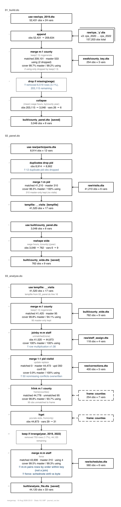
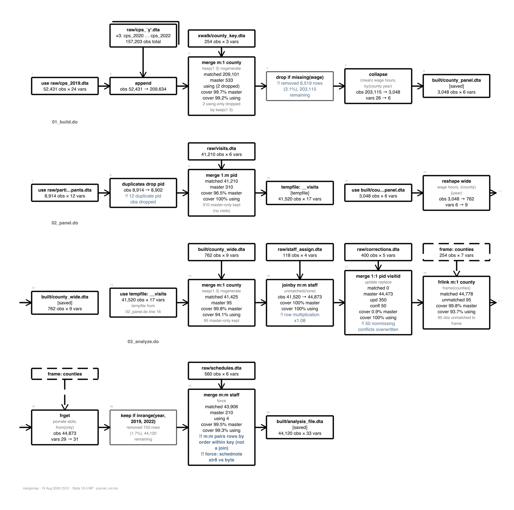

Every embed below shows the same run-mode diagram over the same 20-event journal. The point of the page is to compare how each embed behaves at report width, how tall it gets, and whether the diagram and the Bootstrap shell fight over CSS.
wdimg links the file, it does not copy it. The src is resolved by the browser relative to the HTML file, so a relative path only survives if the report and the image move together.
The twoway PNG is 1600 by 5745 px. wdimg gives it max-width 100 percent and height auto, so in a 960 px column it renders about 3450 px tall. Nothing is clipped and nothing scrolls sideways, but one figure is now four screens.

The same image inside a div with max-height 70vh and overflow auto. The figure now costs two thirds of a screen and the reader scrolls inside it.
With caption() the image is wrapped in figure and figcaption, which picks up the rounded corners and drop shadow from the webdoc2 header stylesheet.

wdiframe writes width and height into the HTML attributes, not into CSS. The attribute only understands pixels and percentages, so height(70vh) is silently dropped and the iframe falls back to the 150 px default. The class() option is the way out.
The self-contained mergemap HTML is about 2500 px tall. At the wdiframe default the diagram is cut off at the first third and the reader has to scroll inside the frame.
height(2600px) shows the whole diagram with no inner scrollbar, but the report has to know the diagram height in advance, and the frame cannot shrink when the diagram does.
class(mm-frame-vh) plus a stylesheet rule of height 78vh. A class rule beats the presentational height attribute, so vh units work here even though they cannot be passed to height().
class(mm-frame-auto) sets height auto. An iframe is a replaced element, so auto does not shrink-wrap the document it holds: it falls back to the height attribute wdiframe wrote, or to the CSS default of 150 px. There is no pure-CSS auto-height for an iframe.
The border option swaps the default borderless look for a 1 px rule.
These are real SVG nodes in the report, not frames. The fragments were sliced out of the mergemap HTML by the driver, which renamed every CSS class to mm-something, rewrote the marker ids, and rescoped mergemap's stylesheet under .mm-embed. Section F shows what happens without those three steps.
width and height attributes removed, viewBox kept. The diagram scales to the column and keeps its aspect ratio. Native size is 880 by 2367.
Same diagram with its width and height attributes left in place, inside a box with max-height 70vh. Text is at its designed size instead of being scaled up by the column.
The twoway export from Stata 19.5. Its root tag is width 5.570in, height 20.000in, viewBox 0 0 4010 14400. The inch units are the problem, not a missing viewBox. Dropping the two attributes lets the viewBox drive the scaling.
The horizontal layout is 6802 by 439. Stretched to a 960 px column it renders about 62 px tall and the labels are unreadable.
The same diagram with its width attribute intact inside a div with overflow-x auto. The report column never scrolls sideways, only the box does.
The SMCL renderer writes a plain-text twin of every diagram. Escaping ampersand, less-than and greater-than and dropping it into a pre block is the cheapest embed there is, and it is the only one that survives a plain-text or Markdown export of the report.
155 lines, longest line 79 characters. At 12.5 px monospace that is about 600 px wide, so it fits any report column without wrapping.
mergemap diagram: ../journal_run.tsv
(run mode; style: boxes)
01_build.do -------------------------------------------------------------------
+----------------------------------+
| raw/cps_2019.dta | 52,431 x 24
+----------------------------------+
|
| +----------------------------------+
| +----------------------------------+|
| | x3: raw/cps_2020.dta |+
| | ... raw/cps_2022.dta |
| +----------------------------------+
| |
| append x3 files <-------------+
| +157,203 obs
| -> 209,634 x 24
|
| +----------------------------------+
| | xwalk/county_key.dta |
| | 254 x 3 key: county |
| +----------------------------------+
| |
| merge m:1 county <-------------+
| keep(1 3) nogenerate
| matched 209,101; master-only 533; using-only (2 dropped)
| -> 209,634 x 26
| 2 using-only dropped by keep(1 3)
|
v
+---------------------------------------------+
| collapse (mean) wage hours, by(county year) | 209,634 -> 3,048 obs
+---------------------------------------------+
|
v
+----------------------------------+
| built/county_panel.dta | 3,048 x 6 [saved]
+----------------------------------+
02_panel.do -------------------------------------------------------------------
+----------------------------------+
| raw/participants.dta | 8,914 x 12
+----------------------------------+
|
v
+---------------------+
| duplicates drop pid | 8,914 -> 8,902 obs
+---------------------+
12 duplicate pid obs dropped
|
| +----------------------------------+
| | raw/visits.dta |
| | 41,210 x 6 key: pid |
| +----------------------------------+
| |
| merge 1:m pid <----------------+
| matched 41,210; master-only 310
| -> 41,520 x 17
| 310 master-only kept (no visits)
|
v
+----------------------------------+
| tempfile:__visits | 41,520 x 17 [tempfile]
+----------------------------------+
+----------------------------------+
| built/county_panel.dta | 3,048 x 6
+----------------------------------+
|
v
+--------------------------------------------+
| reshape wide wage hours, i(county) j(year) | 3,048 -> 762 obs
+--------------------------------------------+
|
v
+----------------------------------+
| built/county_wide.dta | 762 x 9 [saved]
+----------------------------------+
03_analyze.do -----------------------------------------------------------------
+----------------------------------+
| tempfile:__visits | 41,520 x 17
+----------------------------------+
tempfile from 02_panel.do line 16
|
| +----------------------------------+
| | built/county_wide.dta |
| | 762 x 9 key: county |
| +----------------------------------+
| |
| merge m:1 county <-------------+
| keep(1 3) nogenerate
| matched 41,425; master-only 95
| -> 41,520 x 25
| 95 master-only kept
|
| +----------------------------------+
| | raw/staff_assign.dta |
| | 118 x 4 key: staff |
| +----------------------------------+
| |
| joinby m:m staff <-------------+
| unmatched(none)
| dup keys: using +74
| -> 44,873 x 28
| row multiplication x1.08
|
| +----------------------------------+
| | raw/corrections.dta |
| | 400 x 5 key: pid visitid |
| +----------------------------------+
| |
| merge 1:1 pid visitid <--------+
| update replace
| matched 0; master-only 44,473; missing-updated 350;
| conflicts-updated 50
| -> 44,873 x 28
| 50 nonmissing conflicts overwritten
|
| +----------------------------------+
| | frame:counties |
| | 254 x 7 key: county |
| +----------------------------------+
| |
| frlink m:1 county <------------+
| frame(counties)
| matched 44,778; unmatched 95
| -> 44,873 x 29
| 95 obs unmatched to frame
|
| frget povrate slots, from(cnty) <- frame:counties
| -> 44,873 x 31
|
| +----------------------------------+
| | raw/schedules.dta |
| | 560 x 6 key: staff |
| +----------------------------------+
| |
| merge m:m staff <--------------+
| force
| matched 44,663; master-only 210; using-only 4
| dup keys: master +3,110; using +102
| -> 44,873 x 33
| !! m:m pairs rows by order within key (not a join)
| !! force: schednote str8 vs byte
|
v
+----------------------------------+
| built/analysis_file.dta | 44,873 x 33 [saved]
+----------------------------------+
The receipt that accompanies every diagram, from the escalation demo.
. rendersmcl using ../journal_run.tsv
+-----------------------------------------------------------------------------+
| mergemap receipt: ../journal_run.tsv (20 events, 10 join/transform) |
+-----------------------------------------------------------------------------+
# file line command keys using/result F flags
-------------------------------------------------------------------------------
1 01_build.do 12 use raw/cps_2019.dta
2 01_build.do 15 append raw/cps_`y'.dta
3 01_build.do 22 merge m:1 county xwalk/co...key.dta 2 using..
4 01_build.do 31 collapse coun...ear
5 01_build.do 33 save built/co...nel.dta
6 02_panel.do 8 use raw/part...nts.dta
7 02_panel.do 11 duplicates drop pid 12 dupl..
8 02_panel.do 14 merge 1:m pid raw/visits.dta 310 mas..
9 02_panel.do 16 save tempfile tempfile:__visits tempfile
10 02_panel.do 19 use built/co...nel.dta
11 02_panel.do 23 reshape wide coun...ear
12 02_panel.do 26 save built/co...ide.dta
13 03_an...e.do 7 use tempfile:__visits tempfil..
14 03_an...e.do 12 merge m:1 county built/co...ide.dta 95 mast..
15 03_an...e.do 18 joinby m:m staff raw/staf...ign.dta row mul..
16 03_an...e.do 24 merge 1:1 pid ...tid raw/corr...ons.dta 50 nonm..
17 03_an...e.do 29 frlink m:1 county frame:counties 95 obs ..
18 03_an...e.do 30 frget frame:counties
19 03_an...e.do 36 merge m:m staff raw/schedules.dta F !! m:m ..
20 03_an...e.do 40 save built/an...ile.dta
-------------------------------------------------------------------------------
note: 10 join/transform events exceed maxnodes(8);
diagram deferred to the HTML renderer (renderhtml).
Use maxnodes(#) or forcesmcl to draw it in SMCL anyway.
. rendersmcl using ../journal_run.tsv, style(rail)
+-----------------------------------------------------------------------------+
| mergemap receipt: ../journal_run.tsv (20 events, 10 join/transform) |
+-----------------------------------------------------------------------------+
# file line command keys using/result F flags
-------------------------------------------------------------------------------
1 01_build.do 12 use raw/cps_2019.dta
2 01_build.do 15 append raw/cps_`y'.dta
3 01_build.do 22 merge m:1 county xwalk/co...key.dta 2 using..
4 01_build.do 31 collapse coun...ear
5 01_build.do 33 save built/co...nel.dta
6 02_panel.do 8 use raw/part...nts.dta
7 02_panel.do 11 duplicates drop pid 12 dupl..
8 02_panel.do 14 merge 1:m pid raw/visits.dta 310 mas..
9 02_panel.do 16 save tempfile tempfile:__visits tempfile
10 02_panel.do 19 use built/co...nel.dta
11 02_panel.do 23 reshape wide coun...ear
12 02_panel.do 26 save built/co...ide.dta
13 03_an...e.do 7 use tempfile:__visits tempfil..
14 03_an...e.do 12 merge m:1 county built/co...ide.dta 95 mast..
15 03_an...e.do 18 joinby m:m staff raw/staf...ign.dta row mul..
16 03_an...e.do 24 merge 1:1 pid ...tid raw/corr...ons.dta 50 nonm..
17 03_an...e.do 29 frlink m:1 county frame:counties 95 obs ..
18 03_an...e.do 30 frget frame:counties
19 03_an...e.do 36 merge m:m staff raw/schedules.dta F !! m:m ..
20 03_an...e.do 40 save built/an...ile.dta
-------------------------------------------------------------------------------
note: 10 join/transform events exceed maxnodes(8);
diagram deferred to the HTML renderer (renderhtml).
Use maxnodes(#) or forcesmcl to draw it in SMCL anyway.
. log close _mm
mergemap uses native HTML details and summary for per-join detail, with no JavaScript. Bootstrap 5 restyles summary only lightly, so the disclosure triangles survive. These blocks are inside .mm-embed, which is where the scoped mergemap rules for details, summary and details pre apply.
The same markup outside the wrapper gets Bootstrap defaults only, so it loses mergemap's border and grey summary bar.
Body text inside a details element with no mergemap styling attached.
collision_demo.html in this directory injects mergemap's HTML verbatim, stylesheet and all, into a webdoc2 page. Its body rule caps the whole report at 920 px and adds a 24 px margin, its h1 and h2 rules shrink the report headings, and the marker ids ag and aa appear twice because every mergemap file uses the same two.
A single webdoc put line carrying a style block with braces parses fine in a do-file, which matters because it is the shortest way to add a rule from Stata.
The rule above was emitted by that one line.